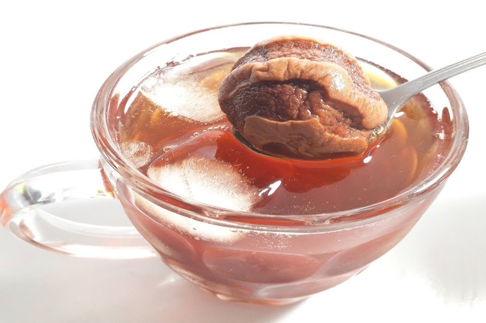

Este durazno deshidratado o mocochinchi, también conocido como quisa es un fruto muy producido en diferentes regiones del país incluidos Santa Cruz y Tarija, entre otros que además aporta variadas vitaminas y minerales. Siendo más específicos, este alimento aporta vitaminas A, C, B1, B2 y B6 y contiene minerales como el calcio, hierro, magnesio, zinc, y azufre entre otros.
Lastimosamente, esta bebida popular no cuenta con una historia oficial en Bolivia, pero “según la tradición oral, llegó al país con la colonización española, a finales del siglo XVI”.
Sin embargo, bien podemos hablar sobre el proceso para la obtención del mocochinchi. Luego de cosechar el fruto, se lo debe pelar, esto se hace a mano. A continuación, “se lo lleva a secar sobre esteras hechas de caña, que quedan a cargo de una persona responsable para taparlas por la noche con carpas para que no llegue el rocío, mientras que durante el día permanecen descubiertas de cara al sol”.
Cuando está seco, los productores se encargan de realizar el proceso de selección de calidad con ayuda de una máquina que separa los duraznos grandes, medianos y pequeños.
Los duraznos suelen dar en terrenos que están cerca de los ríos, lo que complica su cosecha, pues el terreno es difícil de acceder en muchos casos, para ello se requiere varios ayudantes en el momento de la cosecha.
|  | Mocochinchi |